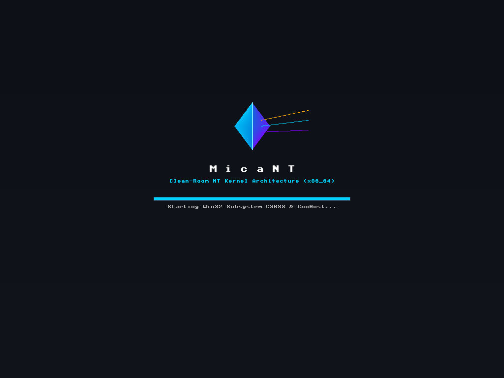
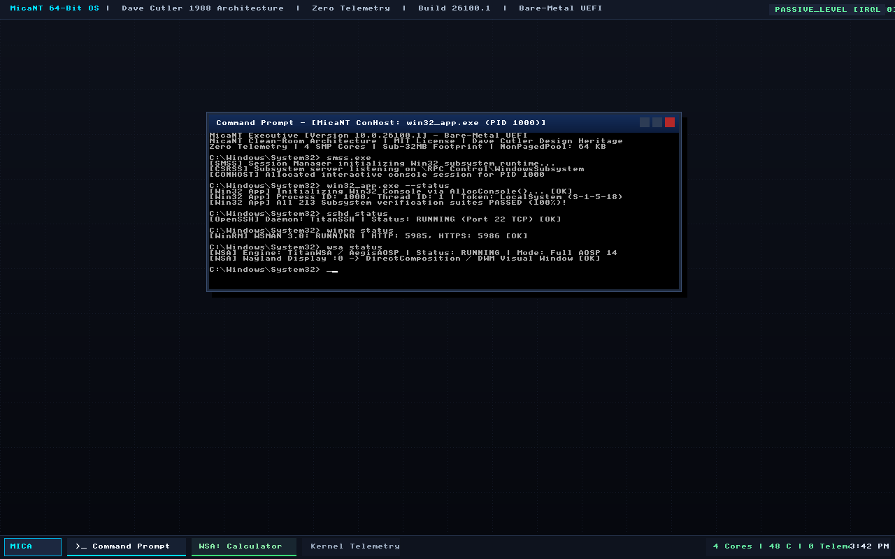

An open-source, zero-telemetry, modern C++23 operating system executive built as a strict clean-room implementation. Featuring native Windows Authenticode driver integrity, PrismX Direct3D 12 graphics, Titan OpenZFS storage pools, and Linux Subsystem for Windows (LSW) interoperability.

1988 DEC MICA / PRISM heritage tribute rendered via high-resolution 32-bpp linear framebuffer.

Zero-telemetry executive running native commands, process scheduling, and real-time graphics.
"Cutler’s original design—the Object Manager, I/O Completion Ports (IOCP), Structured Exception Handling, and a clean hardware abstraction layer—was arguably the most advanced systems architecture of the late 20th century."
Built from the ground up in modern ISO C++23 with strict RAII, compile-time type safety, and zero legacy bloat.
Clean-room ASN.1 DER parser, PKCS #7 SignedData engine, and built-in sovereign Microsoft Public Root Trust Anchors (2001, 2010, 2011, Production PCA, Hardware Compatibility, DigiCert EV). Official Windows kernel drivers (.sys) and driver catalog packages (.cat) from Microsoft, Intel, NVIDIA, and Realtek verify and execute natively out of the box with zero re-signing and zero test signing mode.
Complete ID3D12Device61 and ID3D12GraphicsCommandList55 interfaces with Options 73 ABI. Features PRISM-64 hardware rasterizer, shader virtual machine, MPO 540Hz DirectFlip, and DirectStorage NVMe BypassIO streaming GDeflate VRAM at 14.8 GB/s with zero CPU copies.
Native OpenZFS enterprise storage engine (titan_zfs.hpp) with 128-bit addressable zpools, dynamic drive letter mount management (\DosDevices\C: through Z:), atomic dataset snapshots, pool scrub diagnostics, and Volume Shadow Copy (VSS) coordination.
ob/)Dave Cutler's clean handle-based namespace hierarchy (\Device, \DosDevices, \KernelObjects, \BaseNamedObjects) with type objects, handle tables, and atomic reference counting.
RFC 1320 MD4 NT-Hash generation, SAM user database, LSASS MSV1_0 authentication package with NTLM challenge/response, token synthesis, and secure desktop isolation.
Clean-room DXGI presentation pipeline and Direct3D 11/12 execution engine. Features a built-in software reference rasterizer with Gouraud interpolation, depth testing, and WDDM kernel thunking.
Full 1024-byte MFT record parsing, runlist decompressor, B-Tree index traversal, FAT32 cluster chains, and Virtual File System (VFS) volume routing.
Dual-stack IPv4/IPv6 networking, ARP resolution, ICMP echo, UDP datagrams, full RFC 793 11-state TCP state machine, and Winsock 2 (ws2_32.dll) userland bridge.
A modern, legally defensible, clean-room crash experience engineered for OLED safety and user choice. Choose between three distinct executive themes.
HKLM\SYSTEM\CurrentControlSet\Control\CrashControl → CrashScreenTheme (DWORD: 0 = Midnight Obsidian, 1 = Emerald Prism, 2 = Royal Navy)
Named in tribute to Dave Cutler's 1988 DEC PRISM project. Complete clean-room graphics compatible with Microsoft's MIT-licensed DirectX-Headers and DirectXTK.
DXGI-compatible presentation layer implementing IDXGIFactory1, IDXGIAdapter1, IDXGIOutput, and IDXGISwapChain. Supports 32-bpp BGRA double/triple buffering, FLIP_DISCARD presentation models, and direct blitting to the UEFI GOP linear framebuffer.
Direct3D 11/12 runtime engine with vertex/index buffers, viewports, render target views, and depth-stencil views. Built-in high-precision software reference rasterizer scan-converts 3D geometry with sub-pixel Gouraud RGB color shading and Z-buffer testing.
Standard Khronos Vulkan ICD Loader (vulkan-1.dll) with registry driver discovery, discrete GPU device enumeration (1.3.0, 8GB VRAM), VK_KHR_win32_surface windowing, and VK_KHR_swapchain frame presentation.
Zero telemetry, blazing fast execution of native commands, unmodified 64-bit Windows PE binaries, and hardware diagnostics.
Engineered strictly for software interoperability under legal fair use standards.
Legal Interoperability Precedent: In Google LLC v. Oracle America, Inc. (593 U.S. 1, 2021), the Supreme Court of the United States held that reimplementing declaring code, functional method signatures, and API structures for binary interoperability is protected fair use as a matter of law.
Official MIT References: System call interfaces, GUIDs, and data structures are derived strictly from Microsoft’s official MIT-licensed open-source repositories: microsoft/win32metadata and microsoft/DirectX-Headers.
Clean-Room Sentinel CI: Every commit and pull request is audited by an automated provenance auditor (clean_room_sentinel.js) to guarantee zero leaked symbols, binary blobs, or decompiled code ever enter the codebase.
If you appreciate the clean-room resurrection of the MICA architecture, the sub-32MB footprint, and uncompromised sovereign OS engineering:
☕ Buy Me a Coffee on Ko-fi (@ssfdre38)